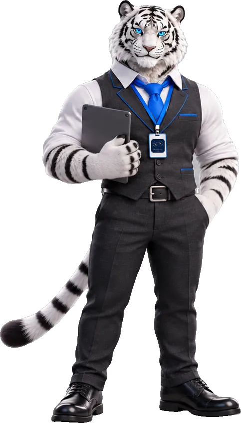

Assistance · nouvelle demande
Échangeons
Je suis disponible pour un poste de technicien supérieur systèmes et réseaux, en support de niveau 2 ou en administration de parc. Disponible immédiatement.
Azur · administrateur WindowsVotre demande sera prise en charge rapidement. Promis, pas de file d'attente !

- Demandeur
- Vous
- Attribué à
- Jean-Philippe Rebischung
- Type
- Demande
- Catégorie
- Recrutement › Entretien
- Objet
- Poste de technicien supérieur systèmes et réseaux
- Zone
- Métropole lilloise, Dunkerque et ses alentours, axe Lille – Dunkerque
- Courriel
- jp.rebischung@protonmail.com
- jean-philippe-rebischung
- GitHub
- jp-rebischung
- Téléphone
- Communiqué sur simple demande par courriel. Par précaution, je ne le publie pas en ligne, pour le protéger de la collecte automatique ; il figure sur le CV joint à mes candidatures.
- Pièces jointes
- cv-jean-philippe-rebischung.pdfdossier-projet-infrastructure.pdf